Admin manual
How to set up projects, manage people and species lists, check the data that comes in from the field, and get it out again.
About this manual
This manual is for people who run a monitoring project with the web admin. It assumes no programming knowledge, except in the last chapters on exports, OGC access and running the server, which use a few commands.
New admins should read Your role and A season, step by step, then look around in the web admin. To understand what researchers do in the field, read the researcher manual too. Walking one visit yourself is the best training.
Every screenshot comes from the real system, using an invented example project called Demo – User Manual.
How to read the boxes
Words written like Lock… are the exact labels of buttons, actions and fields.
Your role
The system has two roles and nothing in between.
| Researcher | Admin | |
|---|---|---|
| Uses | The Android app only | The web admin, and the app if they wish |
| Projects | Only those they were added to | All projects |
| Records in the app | Their own | Their own. The app treats an admin like a researcher who can see every project |
| Records on the server | No access | Everything |
| Exports and OGC API | No access | Full access |
As an admin you are responsible for:
- People: creating accounts and adding them to projects
- Setup: projects, field protocol, study areas, offline maps, transects and sections, and the route proposals researchers send from the field
- Lists: butterfly and plant lists, habitat and management types
- Quality: reviewing visits, validating uncertain and flagged records, resolving sync conflicts, locking final data
- Data: reports, exports and access for QGIS, R and Python, and closing a project when it ends
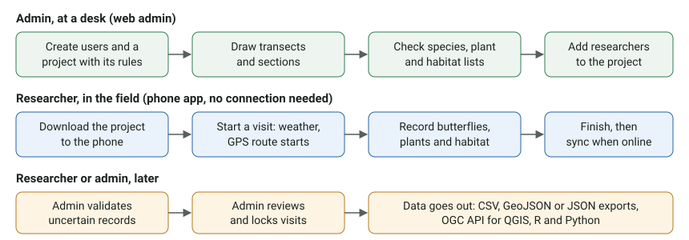
A season, step by step
Use this as a checklist. Each step links to the details.
Before the season
- Check the species lists: butterflies, plants, habitat types and management types. Mark species that need a photo.
- Create the project and draw or import its study area.
- Set the protocol: season dates, time window, weather limits, GPS settings.
- Add transects, import or draw their lines, generate sections, and set habitat and management per section.
- If you have one, upload an offline basemap for the study area.
- Create accounts and add researchers to the project.
- Get each researcher started, and ask them to download the project.
- Walk one test visit yourself. Make a backup.
During the season
- Check the Survey visits list for new visits, quality flags and anything odd.
- Work through the Validation queue.
- Look at Sync conflicts and resolve any that are open.
- Answer new route proposals.
- Mark visits as reviewed as you check them.
- Back up after field sessions.
After the season
- Ask everyone to sync, so that nothing is left on phones.
- Finish validation and conflicts.
- Lock the visits you consider final.
- Check the figures in Reports.
- Export the data and make a final backup.
- Close the project when nothing more should come in.
The web admin
Log in
Open /admin/ on your server, for example http://localhost:8080/admin/ on the machine that runs it. Log in with your email and password. Researchers cannot log in here.

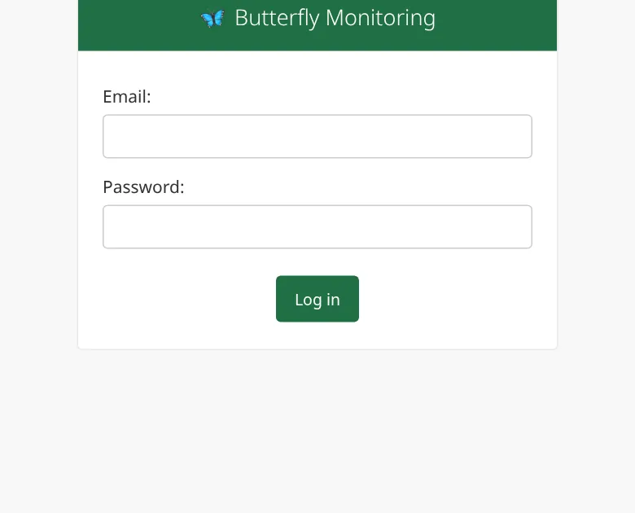
The home page

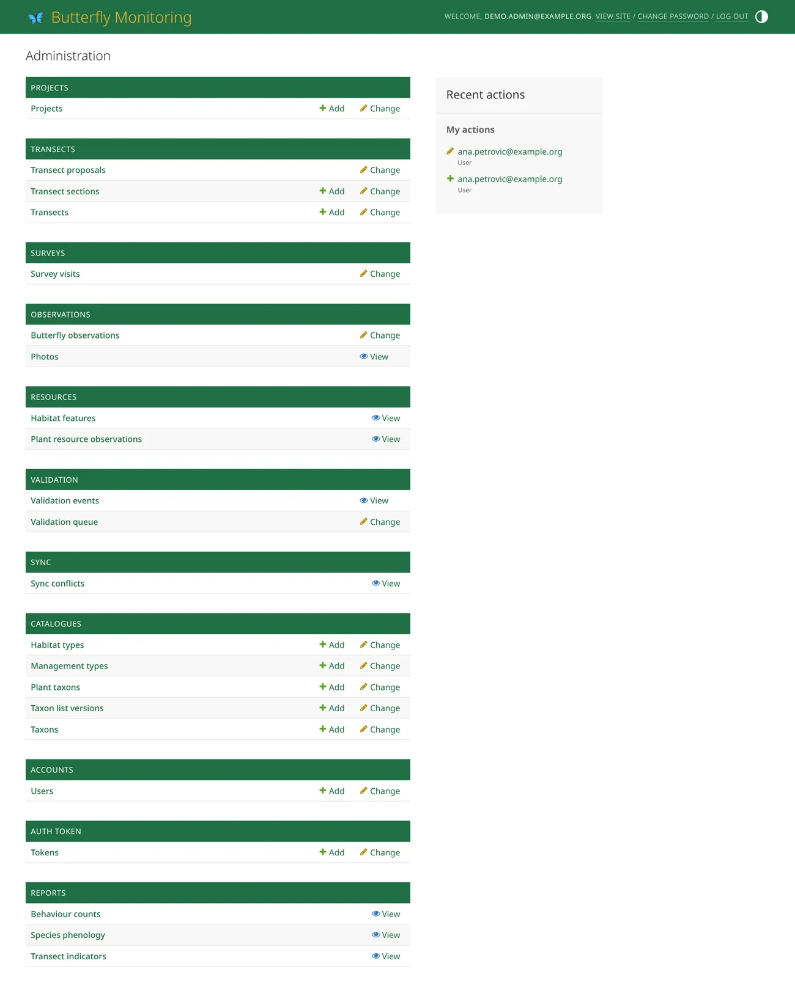
| Group | Contains | In this manual |
|---|---|---|
| Projects | Projects, with their protocol and members | Projects |
| Transects | Transects, transect sections and route proposals | Transects, Route proposals |
| Surveys | Survey visits | Reviewing visits |
| Observations | Butterfly observations and photos | Records from the field |
| Resources | Habitat features and plant records (read-only) | Records from the field |
| Validation | The validation queue, and every decision made (Validation events) | Validation |
| Sync | Sync conflicts | Sync conflicts |
| Catalogues | Taxons, taxon list versions, plant taxons, habitat and management types | Catalogues |
| Accounts | Users | Users |
| Auth Token | Personal tokens for OGC access | Create a token |
| Reports | Transect indicators, species phenology and behaviour counts | Reports |
At the top right are Change password, Log out and a switch for light and dark colours. View site leads nowhere useful, because the system has no public website, so ignore it.
List pages
Every kind of data has a list page that works the same way.

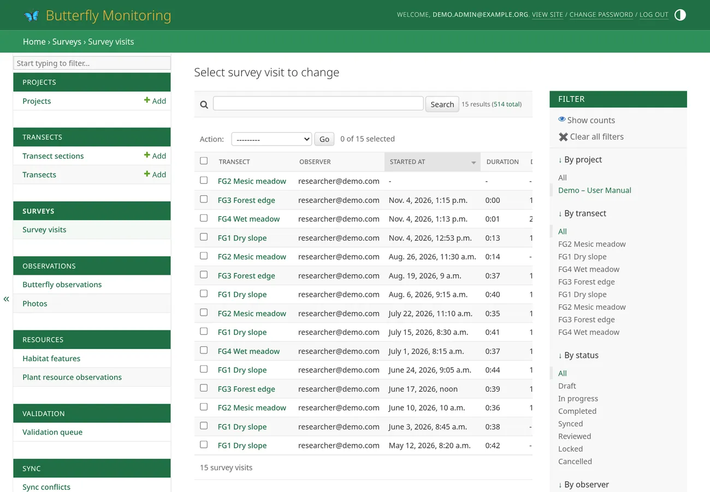
- Search: the box at the top. What it searches depends on the list.
- Filter: the panel on the right. Clear all filters resets them. Filter by project first when a list is long.
- Sort: click a column heading.
- Open a record: click the link in the first column.
- Actions: tick rows, choose from the Action menu and click Go. This is how you lock visits, generate sections, export rows and more.
- Sidebar: the small arrows at the far left hide or show it.
Times are in UTC
Saving and the change reason
When you save a change to an existing record, a small dialog asks for a reason. It is optional but valuable: it is stored in the record's history, so that anyone can later see why you changed it.

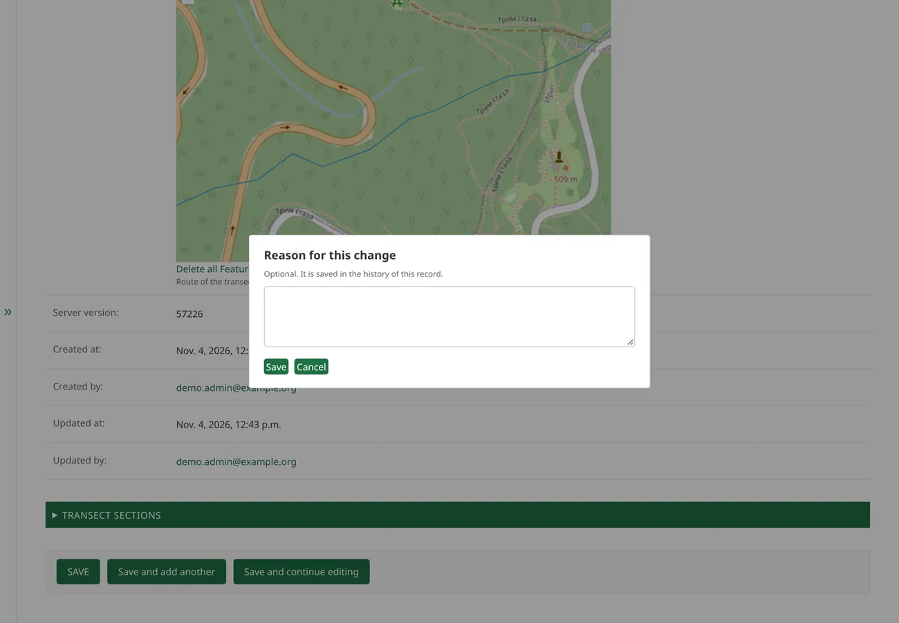
Nothing is really deleted
Phones work offline, so a record that disappears from the server would confuse them. So records are not erased. Instead they get a mark that says they are deleted, which is called a soft delete.
- Soft delete selected in the Action menu hides a record. Phones remove it at their next sync.
- Restore selected (undo soft delete) brings it back, and phones get it again at their next sync.
- To see deleted records, use the By deleted filter on the right and choose Yes.
A restore can be refused if a live record has since taken the same code. The message names the record.
History: who changed what
Almost every record has a History button at the top right. It lists each change with the date, the user, the fields that changed and the reason.

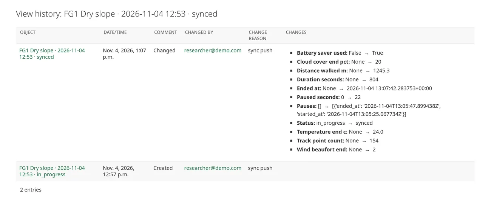
Pages you can only view
Some pages have no save button. Plant records, habitat features, photos, route proposals, validation events, the reports and locked visits can only be viewed, and resolved conflicts are closed. On the home page most of these show View instead of Change. Route proposals show Change because their list has two actions, but a proposal's own page is read-only.
Users
There is no sign-up form. You create every account.
Create an account
- On the home page, click Add next to Users.
- Enter the Email (this is the login), the Name and a password twice. Click Save and continue editing.
- Fill in Organization if useful.
- Under Groups, choose researcher or admin in the left box and click the arrow to move it right. Every account needs one.
- Click Save.
- Give the person their email and password in a safe way, and add them to a project.

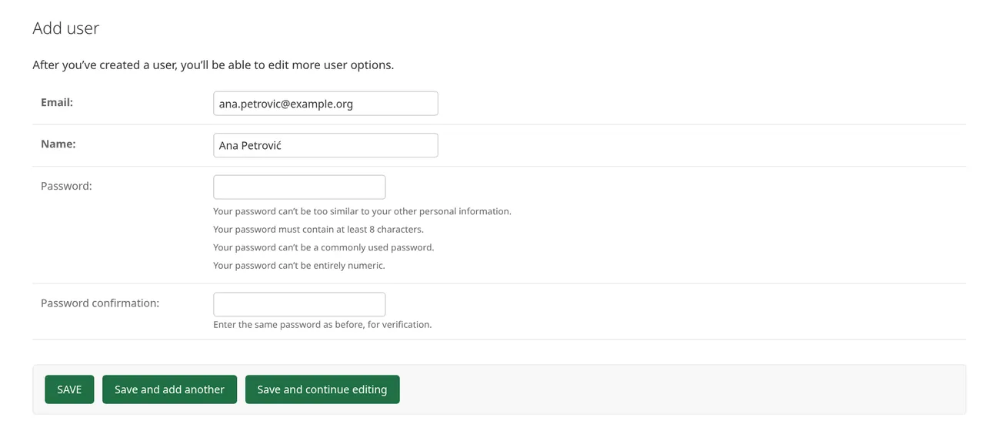

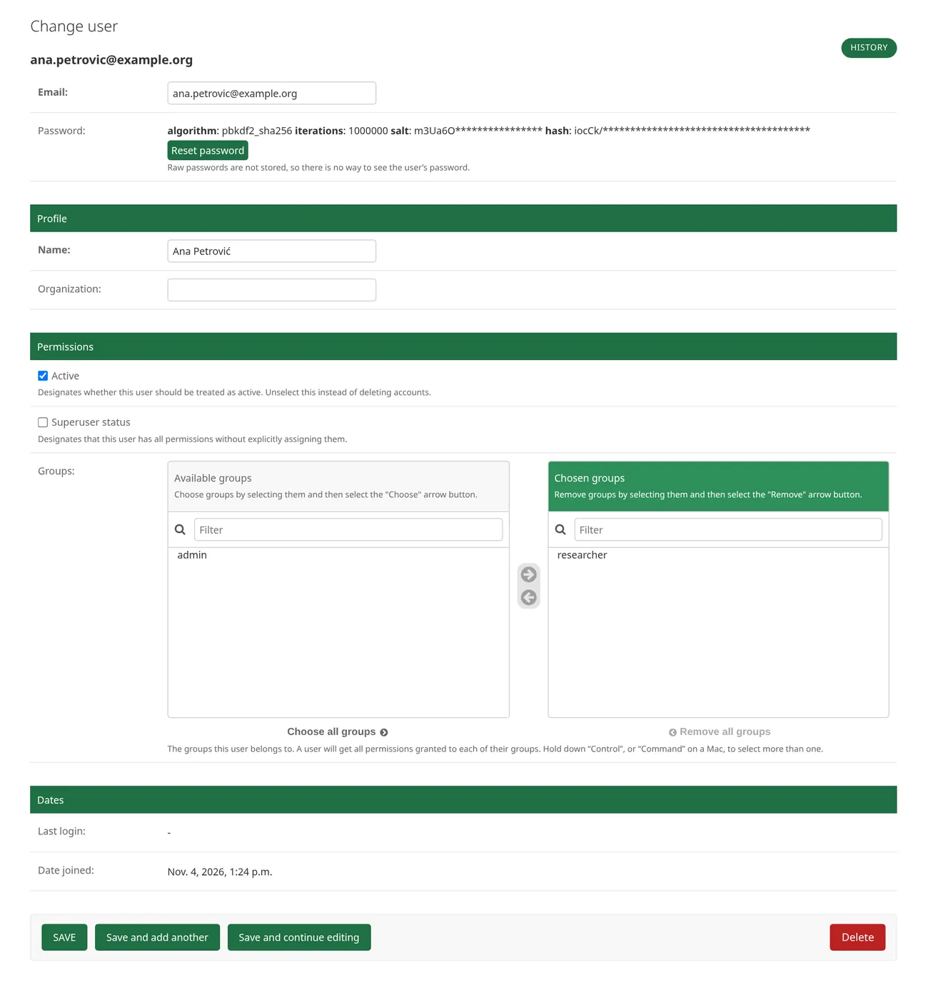

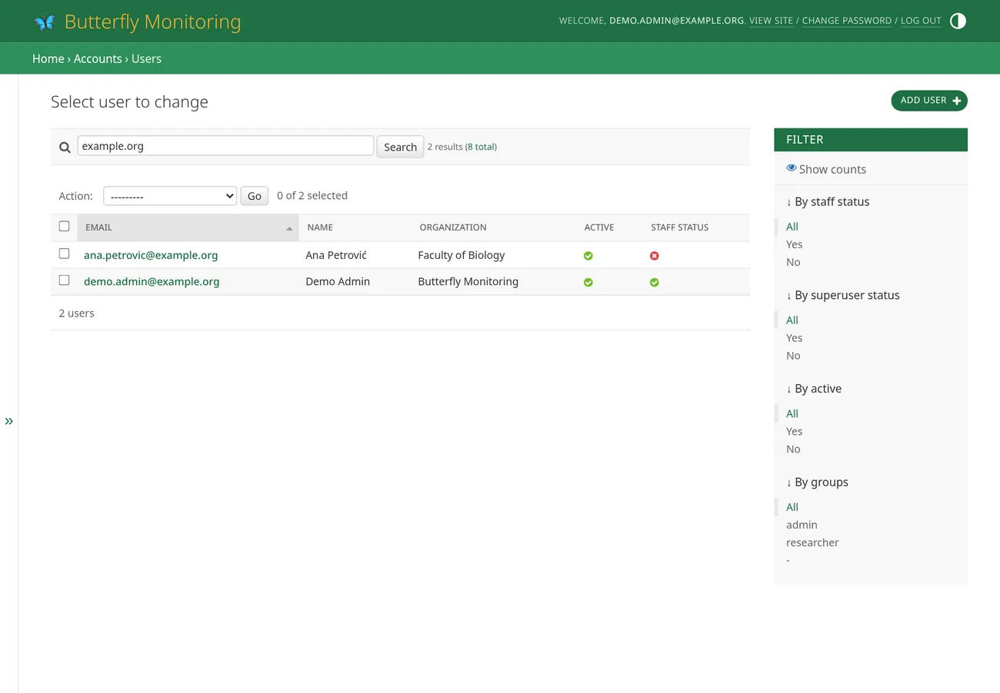
| Group | Effect |
|---|---|
| researcher | Can log in to the app, in the projects they were added to. Cannot open the web admin. |
| admin | Everything in this manual. Being in this group automatically gives access to the web admin, and leaving it removes that access. |
Reset a password
Nobody can see a password, and there is no reset by email. Open the user and click Reset password under the Password field, enter a new one, and give it to the person. They cannot change it themselves in the app. Admins can use Change password at the top right of the web admin.
After five failed logins, an account is blocked for 15 minutes. The block ends by itself.
When someone leaves
Open the user and untick Active. They can no longer log in or sync, and their records stay. Do not delete the account, because records point to it.
Projects
A project is one monitoring programme. It holds the protocol, the study area, the transects, the members and the choice of butterfly list.
Create a project
- Click Add next to Projects.
- Fill in the fields below. Click Save and continue editing.
- The page now also shows the Project protocol and Project memberships sections. Fill those in and save again.

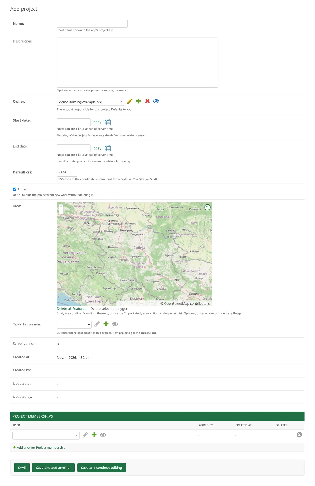

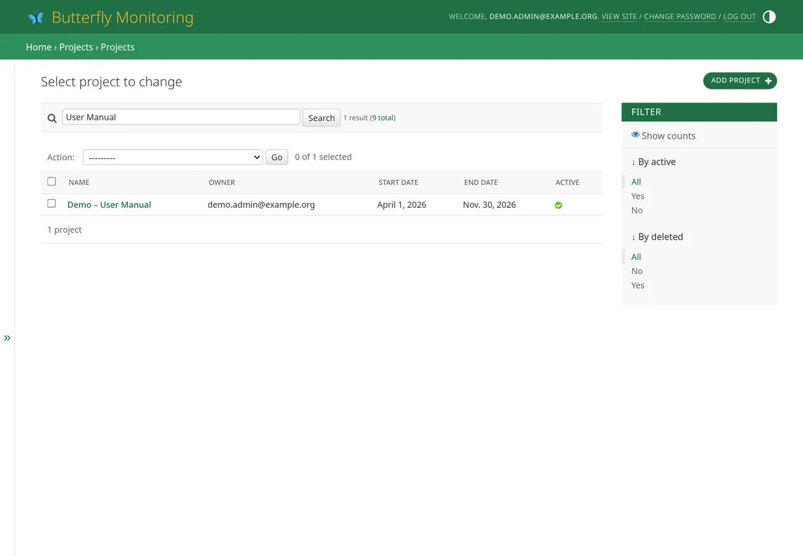
| Field | What it is |
|---|---|
| Name | The short name researchers see in the app. |
| Description | Optional notes: aim, site, partners. |
| Owner | The account responsible for the project. Starts as you. |
| Start date, End date | The project's period, shown in the app. Its start year sets the default season. Leave the end empty while it is ongoing. |
| Default crs | The coordinate system code. Keep 4326, which is GPS coordinates (WGS 84). |
| Active | See the box below. |
| Area | The study area. Optional. See below. |
| Taxon list version | Which release of the butterfly list this project uses. New projects get the current one. |
| Basemap | An offline map file for the phones. Optional. See Offline basemap. |
| Closed at, Closed by | Filled in when the project is closed. You cannot type here. See Close and reopen a project. |
The study area
The study area is optional, but a butterfly record outside it gets the quality flag Outside project area, which puts it in the validation queue. Without an area, nothing is flagged for this. There are two ways to set it.
Draw it on the map. The ? at the top right of the map explains the controls:
- Draw: click each corner, then double-click to finish. Hold Shift and drag to draw freehand.
- Reshape: drag a corner, or drag an edge to add a corner. Hold Shift and click a corner to remove it.
- Remove one polygon: click inside it, then Delete selected polygon. Delete all Features removes everything.

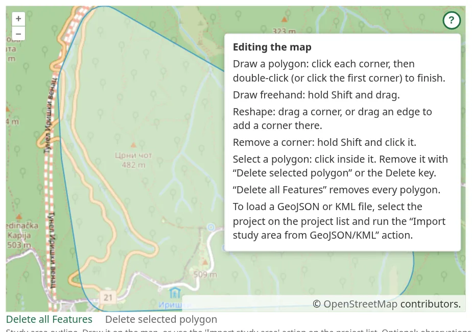
Or load a file. On the project list, tick the project, choose Import study area from GeoJSON/KML and click Go. Choose the file. The new area replaces the old one.

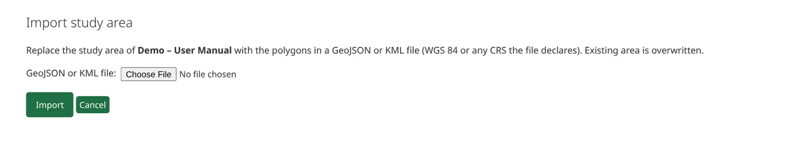
The protocol
The protocol holds the project's rules. It is created with the project, using the defaults below. The app shows it to researchers and checks against it. The app warns, it does not forbid: a visit outside these limits is still saved.

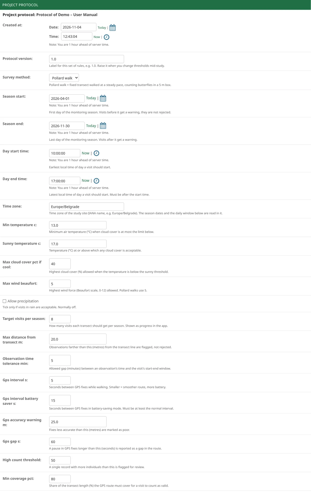
| Field | Default | What it controls |
|---|---|---|
| Protocol version | 1.0 | A label stored with each visit. Raise it when you change limits in the middle of a study. |
| Survey method | Pollard walk | The method used. |
| Season start, Season end | 1 April and 30 September of the project's start year | A visit outside these dates gets a warning. Check these two. |
| Time zone | Europe/Belgrade | The study site's zone. The app and the server read the season and the daily window in it, and the reports count years and weeks in it. Type in the box to search the list. |
| Day start time, Day end time | 10:00, 17:00 | The daily window for starting a visit. |
| Min temperature c | 13.0 | Lowest temperature when cloud cover is within the limit below. |
| Sunny temperature c | 17.0 | From this temperature, any cloud cover is fine. |
| Max cloud cover pct if cool | 40 | Most cloud allowed below the sunny temperature. |
| Max wind beaufort | 5 | Strongest wind allowed. |
| Allow precipitation | Off | Tick only if visits in rain are acceptable. |
| Target visits per season | 8 | How many visits each transect should get. |
| Max distance from transect m | 20 | How far from the line a record can be and still get a section. A walk record farther away gets the flag Far from transect. Also used to work out route coverage. |
| Observation time tolerance min | 5 | How far outside the visit's start and end a record's time may be. |
| Gps interval s | 5 | Seconds between GPS points while walking. |
| Gps interval battery saver s | 15 | Seconds between points in battery saver mode. |
| Gps accuracy warning m | 25 | A position worse than this shows a warning and may not count for the route. |
| Gps gap s | 60 | A pause in GPS longer than this is reported as a gap, and gives the visit the flag gps_gap. |
| High count threshold | 50 | A record with a higher count gets the flag High count. |
| Min coverage pct | 80 | The share of the transect the route must cover for a valid visit. A visit below it gets the flag low_coverage. |
Add and remove members
Only members see a project in the app. On the project page, scroll to Project memberships.
- In an empty row, start typing the person's name or email in User and pick them. Use Add another Project membership for more rows.
- Click Save. The person sees the project at their next sync or list refresh.

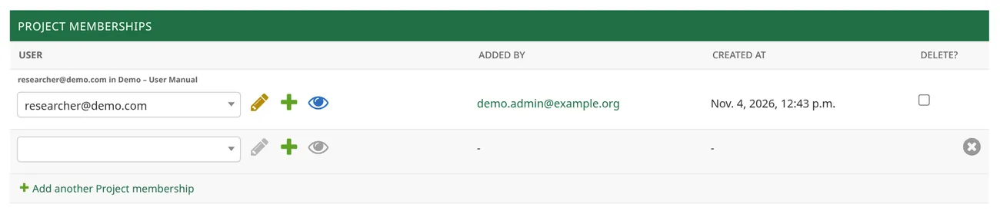
To remove someone, tick Delete on their row and save. The project disappears from their app at the next sync. Their records stay on the server, and what is on their phone is not erased.
Offline basemap
Fields often have no signal, so the phones' normal background map, which comes from the internet, may be missing there. A project can have one offline basemap: a map file that phones download together with the project and draw on every map, over the online map.

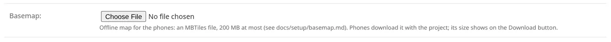
- Make an MBTiles file of the study area, for example in QGIS.
docs/setup/basemap.mdin the project's files explains how, step by step. - Open the project, click Choose File next to Basemap, pick the file and click Save.
- The project's card on each phone now says Outdated. Researchers tap Update, and the button shows the file's size, for example Update (48 MB), so they can wait for Wi-Fi.
- What is accepted: a raster MBTiles file (PNG, JPG or WebP tiles), at most 200 MB. Anything else is refused with a message when you save.
- To replace it, upload a new file. To remove it, tick Clear and save. Phones follow at their next Update.
- Where it shows: outside the file's area, and beyond its zoom levels, phones show the normal online map, or a plain background offline.
Close and reopen a project
When a project is finished, close it. A closed project accepts no new and no changed data from phones: no new visits, butterflies, plants, habitat features, route proposals or photos, and no edits or deletes. Nothing is deleted, the members stay, and the data can still be reviewed, validated, locked and exported.
- On the project list, tick the project, choose Close project… and click Go.
- Write a Reason of at least 10 characters. It is kept in the project's history.
- Click Close project. The list's Closed column now has a tick, and the By closed filter finds it.

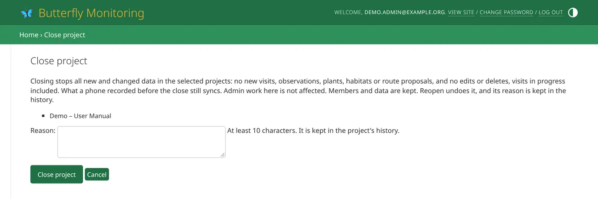
- Work done before the close still arrives. A phone that recorded something offline before you closed the project can still sync it afterwards. This uses the time on the phone.
- Your own work is not affected. In the web admin you can still correct, validate, mark as reviewed, lock and unlock.
- On the phone the project says Closed after the next sync, and the buttons that add or change data are greyed out. A change made too late appears under Errors on the researcher's Unsynced data screen.
- A visit still in progress cannot be finished on the phone any more. The researcher can only cancel it on their phone, which deletes what the phone had not sent yet. On the server it stays In progress, as it was at the close. If the walk should count, reopen the project so the researcher can finish it, then close it again.
To reopen, use Reopen project… in the same way, also with a reason. The project takes new data again.
Transects and sections
A transect is the fixed route that researchers walk. It is divided into numbered sections, usually one habitat each. Researchers cannot create or change these on the phone, so getting them right is your job.
The usual order of work
- Add the transect and save it with its line: draw it, or draw a rough line and replace it with Import line.
- Generate equal sections with the action on the transect list.
- Open the transect and set habitat and management for each section.
- Check the page for a warning about section lengths.
Add a transect
Click Add next to Transects.

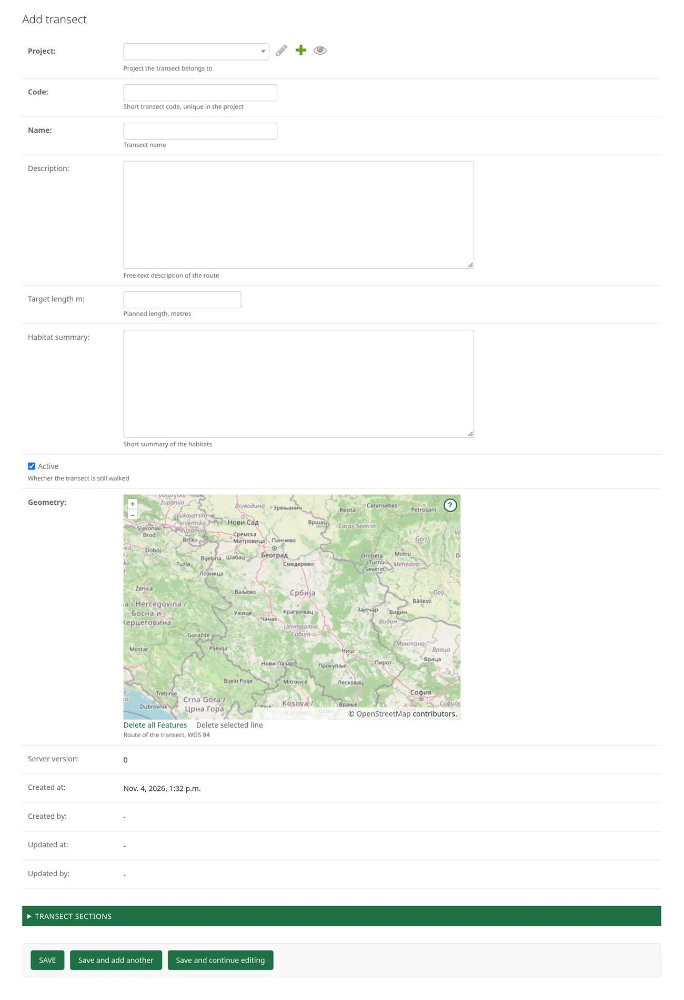
| Field | What it is |
|---|---|
| Project | The project it belongs to. |
| Code | A short code, unique in the project, for example FG1. Researchers search by it. |
| Name | A readable name, for example Dry slope. |
| Description | Free text about the route, shown in the app. |
| Target length m | The planned length in metres. |
| Habitat summary | A short text about the habitats, shown in the app. |
| Active | Untick when the transect is no longer walked. The app then refuses new visits on it, and past visits stay. |
| Geometry | The route on the map. Click points along it and double-click to finish. The ? on the map explains the controls. |

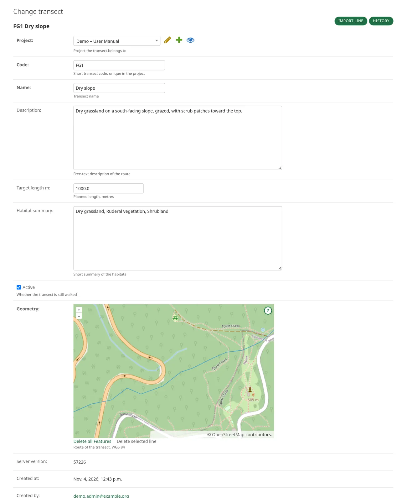

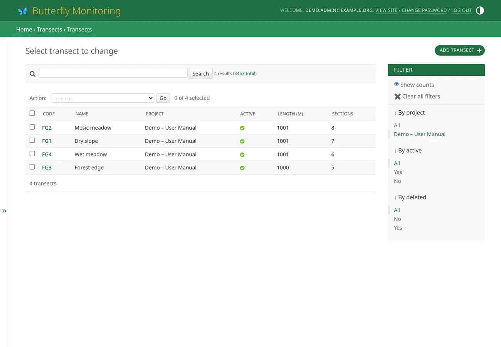
Import a line from a file
If you have the route from a GPS device, open a saved transect, click Import line at the top right, and choose a GPX, KML or GeoJSON file. The first line or track in the file replaces the transect's line.

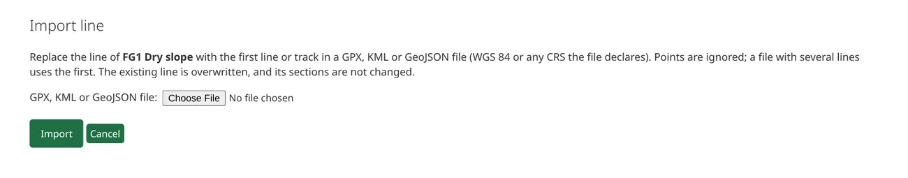
After an import, check that the sections still follow the line. The page warns you if the lengths no longer match.
Generate sections
- On the transect list, tick one transect.
- Choose Generate N equal sections… and click Go.
- Enter the Number of sections and a Code prefix. With prefix S you get S1, S2, and so on.
- If the transect already has sections, tick Replace existing sections. They are soft-deleted, not erased.
- Click Generate, then open the transect to fill in the habitat.

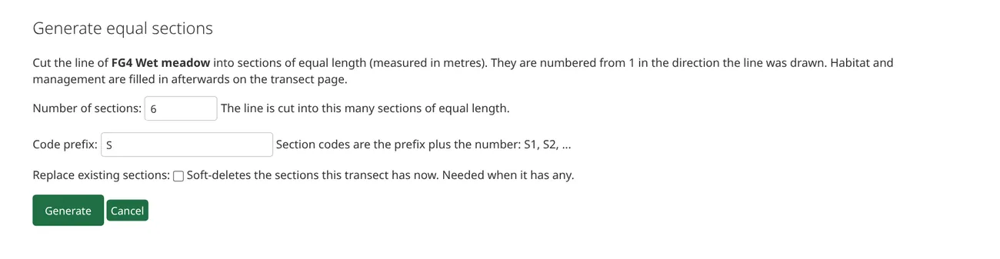
Edit sections
On the transect page, open Transect sections near the bottom. Each section has these fields:

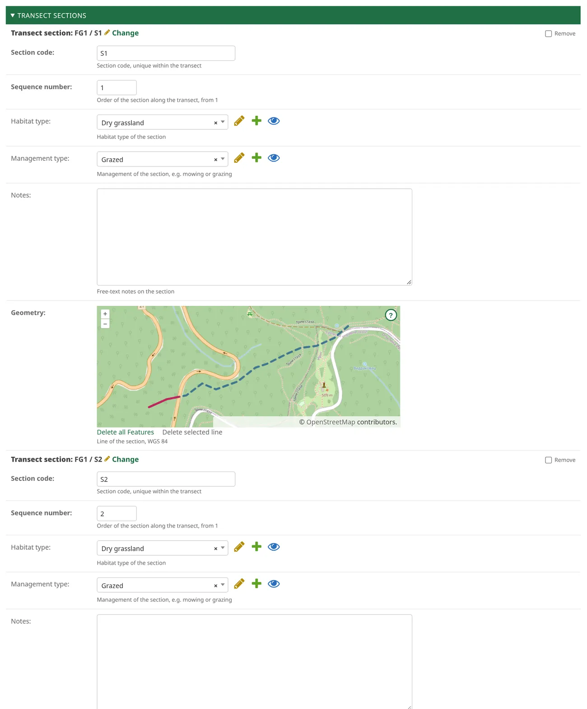
| Field | What it is |
|---|---|
| Section code | Unique within the transect, for example S1. |
| Sequence number | The order along the route, starting at 1. |
| Habitat type, Management type | Chosen from the catalogues. Shown to researchers and used in the exports. |
| Notes | Free text, shown in the app. |
| Geometry | The section's line. It must stay within 5 m of the transect line along its whole length. Otherwise saving is refused. |
| Remove | Tick to soft-delete this section when you save. |
You can also open one section on its own from the Transect sections list. New points snap to the dashed transect line there, which helps you draw sections by hand.

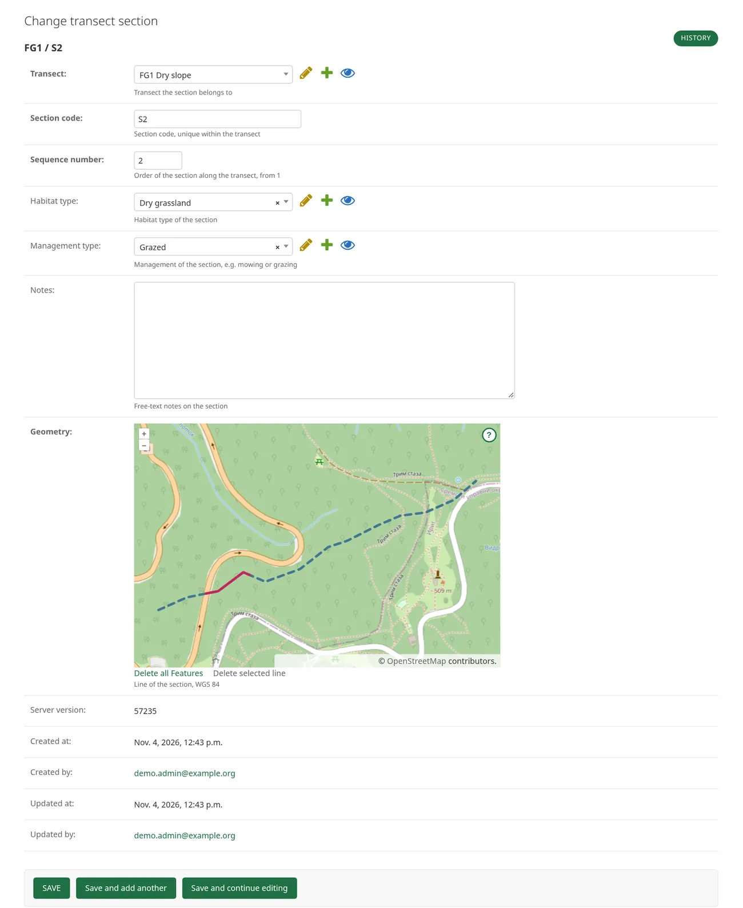
Route proposals from the field
Researchers cannot change transects, but they can propose a route: they walk it with GPS or draw it on the phone's map, give it a name and a reason, and it arrives here at their next sync. A proposal can be for a new route or a replacement for an existing transect, for example one that crosses private land or has become impassable.
Open Transects → Transect proposals. The list shows who proposed what, why, the length worked out by the server, and the status: Pending, Accepted or Rejected. Filter by project, status or reason.

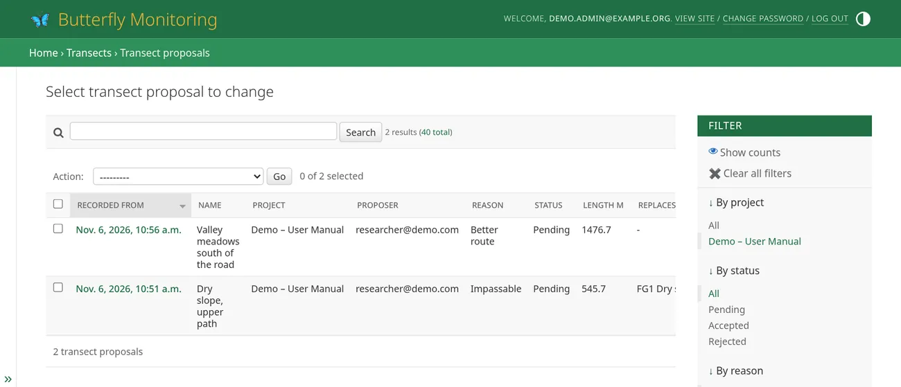
Click a proposal to see it. The page is read-only: the proposed route is the solid line, and a transect it would replace is dashed.

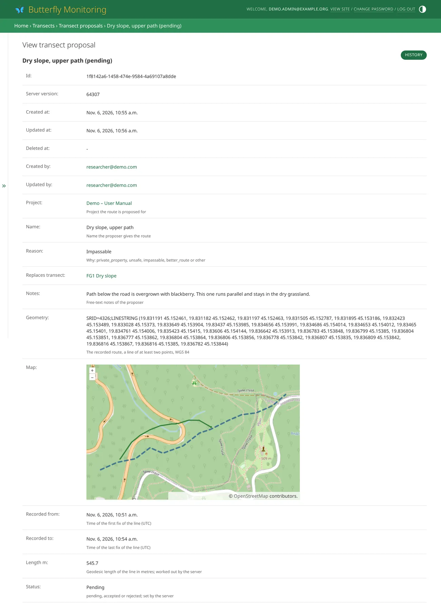
Accept: make a transect
- On the list, tick one pending proposal, choose Create transect from proposal… and click Go.
- Enter a Transect code that is not used yet in the project (the page lists the codes in use) and check the Transect name.
- For a replacement, leave Deactivate the replaced transect ticked if the old route should no longer be walked. Its line stays as it is, so its past visits keep their route.
- Click Create transect. You land on the new transect.
- The new transect is inactive, so phones cannot walk it yet. Generate its sections, set their habitat, then tick Active and save.

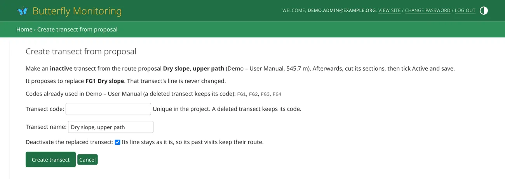
Reject
Tick one or more pending proposals, choose Reject…, write a Reason of at least 10 characters and click Reject. The researcher sees the reason on their phone.

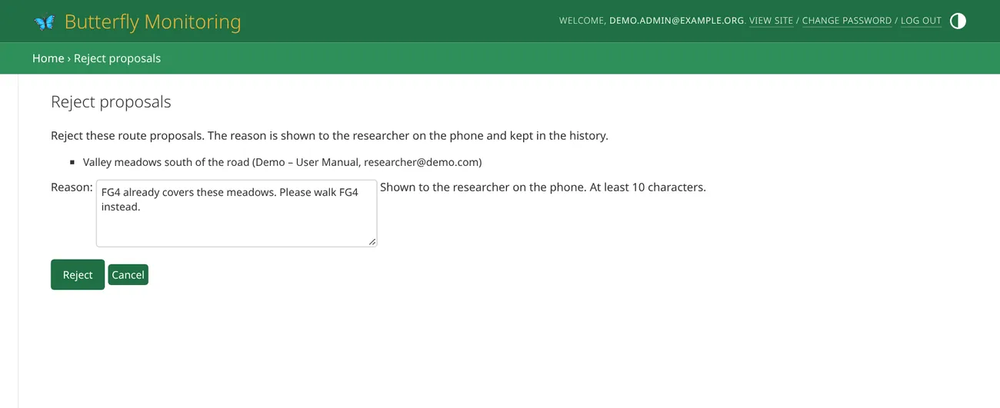
A proposal that has been accepted or rejected cannot change any more, on the phone or here.
Catalogues
Catalogues are the lists researchers choose from: butterflies, plants, habitat types and management types. They are shared by all projects. Changes reach phones at the next sync.
Butterflies (Taxons)
Open Taxons. Search by scientific, Serbian or English name. Filter by rank, family, active and more.

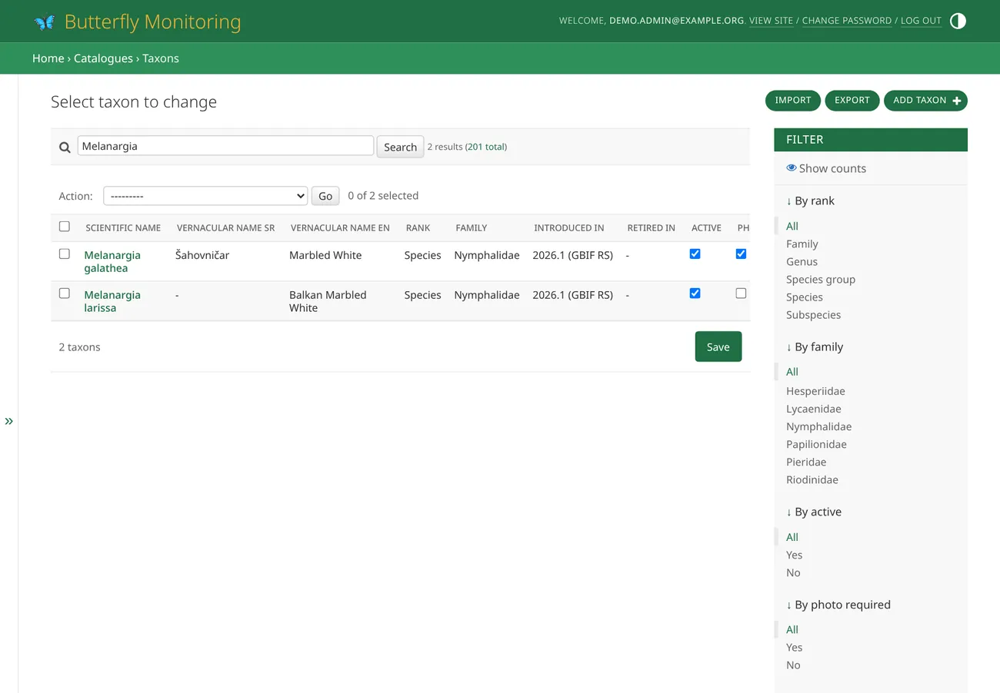
- Photo required: when ticked, a record of this species asks for a photo in the app and always goes to the validation queue. Use it for species that are hard to tell apart.
- Active: when unticked, the species no longer appears in the app's list. Records that already use it are kept.
- Other fields (author, family, names, identification notes) are on the species page.
- Add creates a new species, with a scientific name, rank and the release it first appears in.
When a name changes
A species' scientific name is fixed once created, because records point to it. To rename or merge, use one of the two actions on the list, which retire the old name and keep the link to it.
| Action | Use it when | What happens |
|---|---|---|
| Rename / synonymise… | The accepted name is not in the list yet. | Creates a new species with the new name. Retires the old one in the release you choose. Select exactly one. |
| Synonymise into existing… | The accepted name is already in the list. | Retires the selected names as synonyms of the existing species. You can select several. |

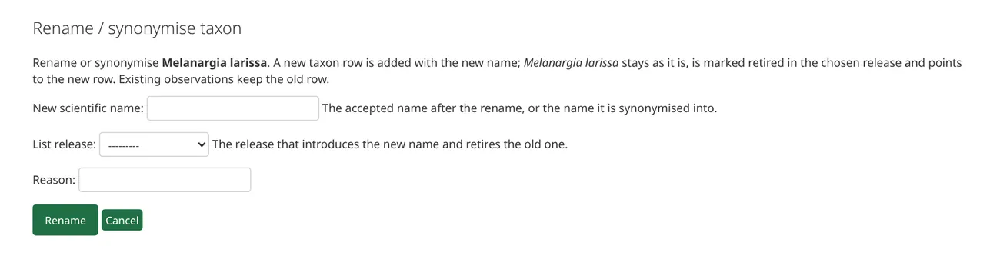

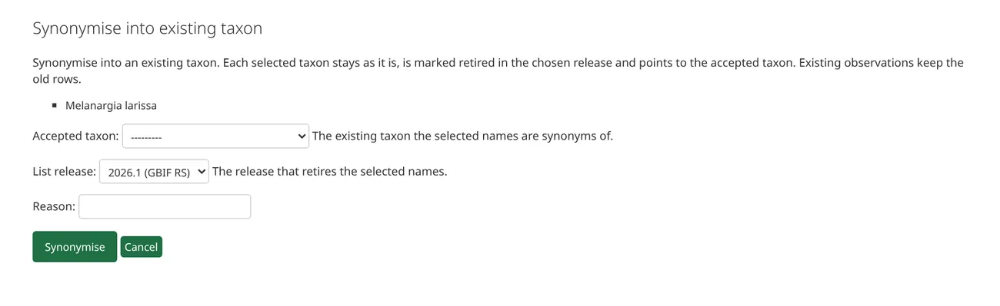
Old records keep the name they were recorded with. They are never rewritten.
Releases of the list (Taxon list versions)
Each change to the list belongs to a release. One release is the current one, and each project says which one it uses.
- Open Taxon list versions and click Publish new release.
- Enter the Version label, the Source, the date and notes.
- Under Projects to switch, tick the projects that should move to this release. Others stay on theirs.
- Save. The new release becomes the current one.

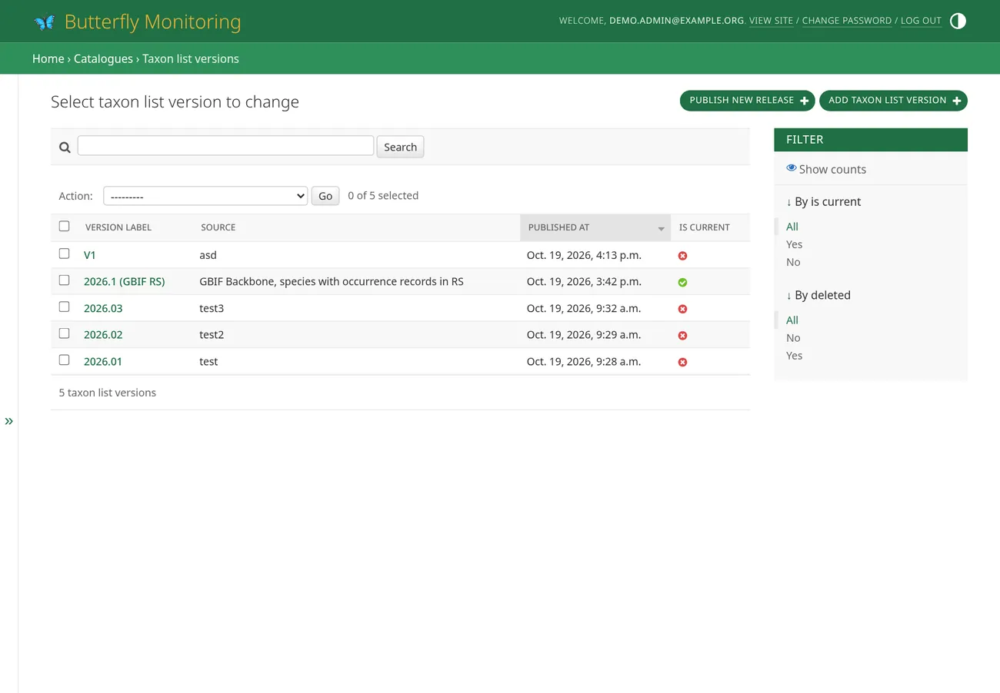

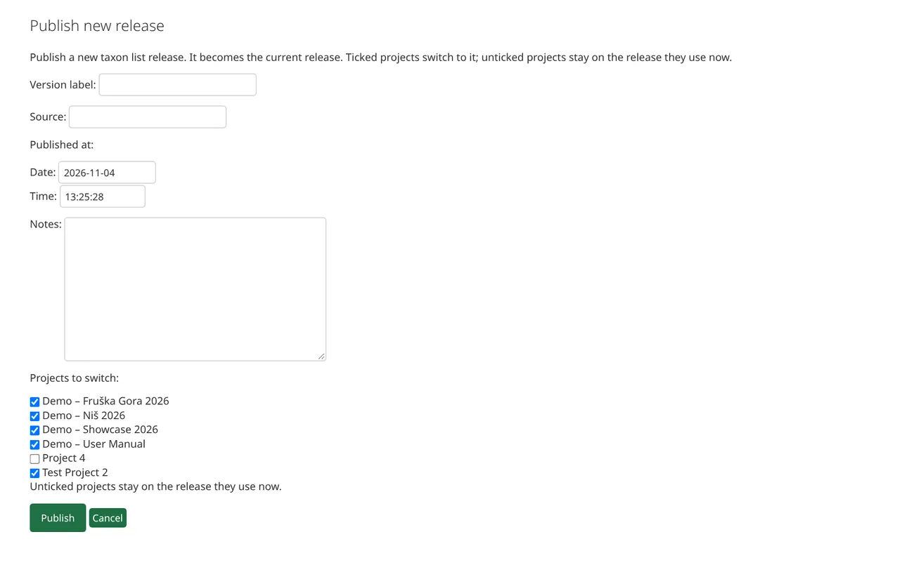
Plants (Plant taxons)
The list researchers choose host and nectar plants from. Search and filter as above, tick Active in the list to show or hide a plant, and use Add for a new one. A name ending in spp. stands for a whole genus.

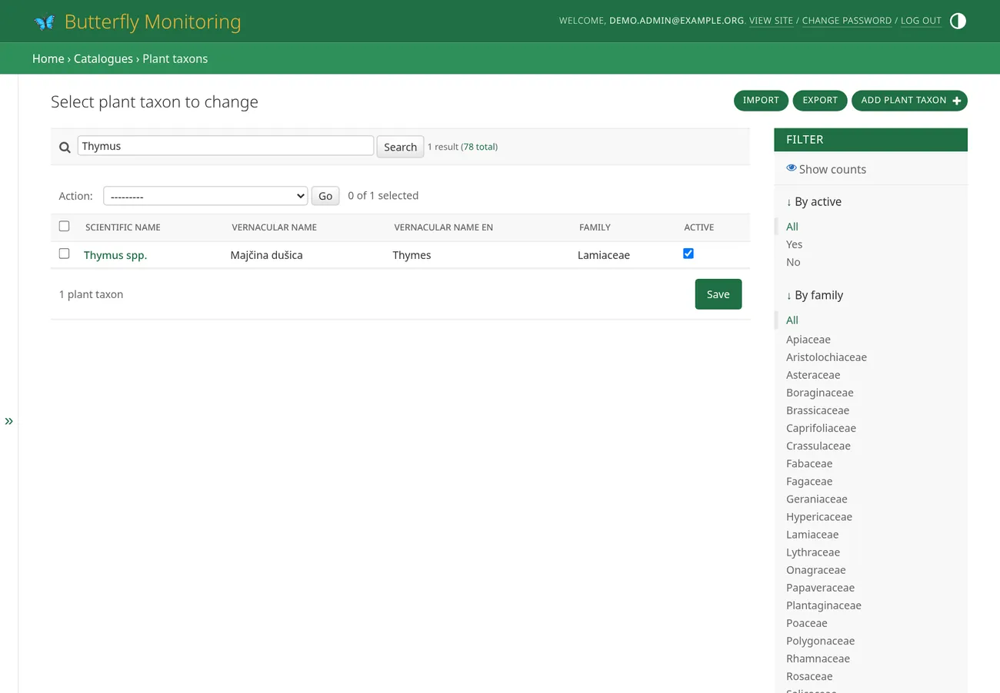
Habitat and management types
These two short lists feed the habitat fields in the app and on sections. Each entry has a code, English and Serbian names and a sort order. Habitat types can also hold a EUNIS code. Sort order and Active can be changed in the list.

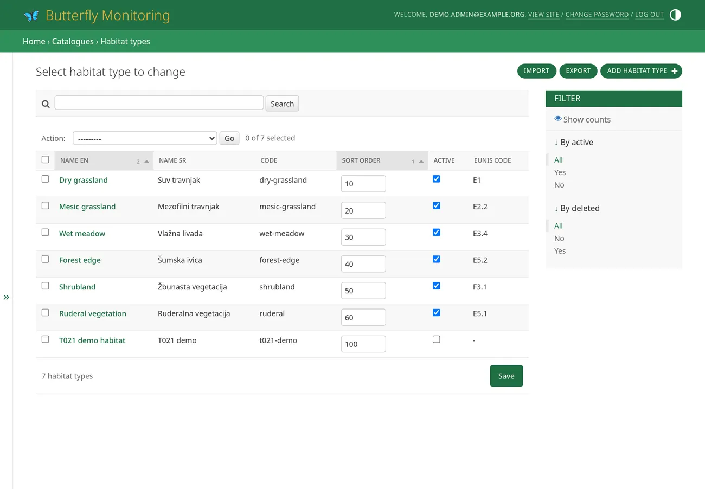

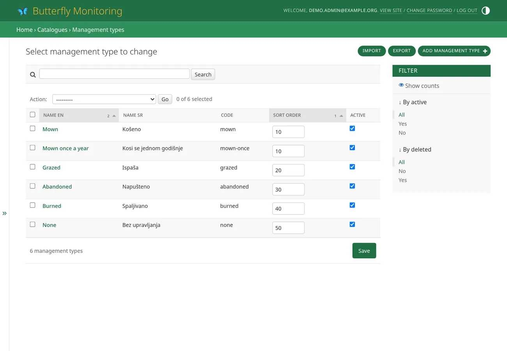
Import and export lists as CSV
All four lists have Import and Export buttons at the top right.
- Click Export first, to get a file with the right columns.
- Edit it in a spreadsheet and save it as CSV.
- Click Import and choose the file and format. You get a preview of exactly what would be created or changed. Nothing is saved yet.
- Check the preview, then confirm.

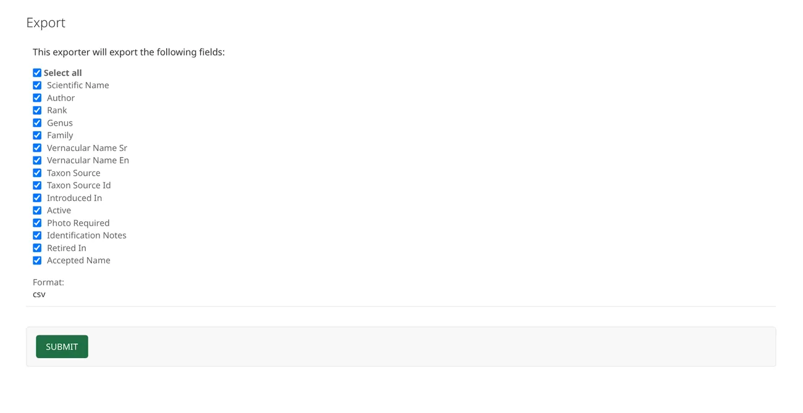

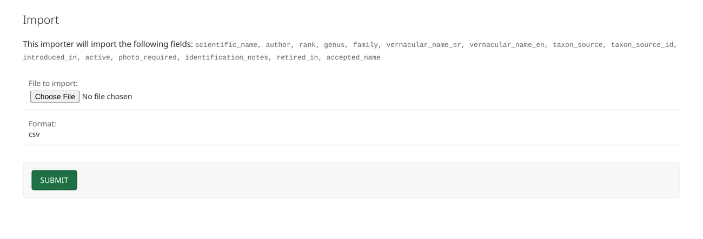
Reviewing visits
Every walk appears under Survey visits. Visits are created on phones, so there is no Add button.

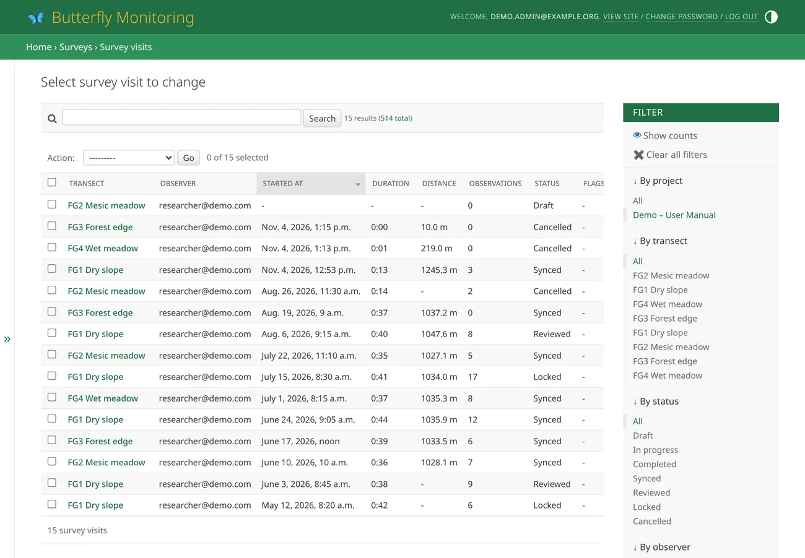
| Column | Meaning |
|---|---|
| Transect, Observer | The route and the person who walked it. |
| Started at | In UTC. |
| Duration | Walking time as hours:minutes, without pauses. |
| Distance | The length of the GPS route, worked out on the server. |
| Observations | The number of butterfly records. |
| Status | See Visit statuses. |
| Flags | Quality flags of the visit. See Quality flags and route coverage. |
| Outcome | What the visit came to, as used in exports. See below. |
| Last modified | The last save on the server, not the time of the edit on the phone. |
| Outcome | Meaning |
|---|---|
completed_with_records | Finished, with butterflies. |
true_zero | Finished, with the observer confirming no butterflies were seen. |
cancelled:not_conducted | Planned but never walked. |
cancelled:aborted_weather | Stopped because of the weather. |
cancelled:aborted_other | Stopped for another reason. |
cancelled:invalid_protocol | Walked, but not by the method. |
| Empty | A draft or a visit still in progress. |
Visit statuses
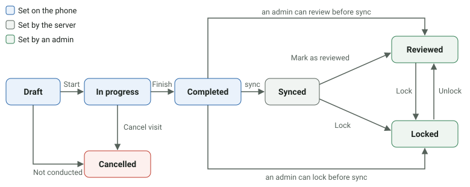
| Status | Meaning | Set by |
|---|---|---|
| Draft | Saved but not started. | Phone |
| In progress | Being walked. A visit that stays here long was probably never finished. Check with the researcher, whose phone may not have synced. | Phone |
| Completed | Finished on the phone. It normally becomes Synced as soon as it reaches the server. | Phone |
| Synced | Finished and on the server. Ready for your review. | Server |
| Reviewed | You have looked at it. Researchers can still correct records. | Admin |
| Locked | Final. Nobody can change it or its records, unless it is unlocked. | Admin |
| Cancelled | Stopped or not walked. Its reason is stored. Records made before cancelling are kept. | Phone |
Open and check a visit
Click a visit to open it. The page has the visit's fields, then its butterfly records, its environmental snapshots and a map of its route.

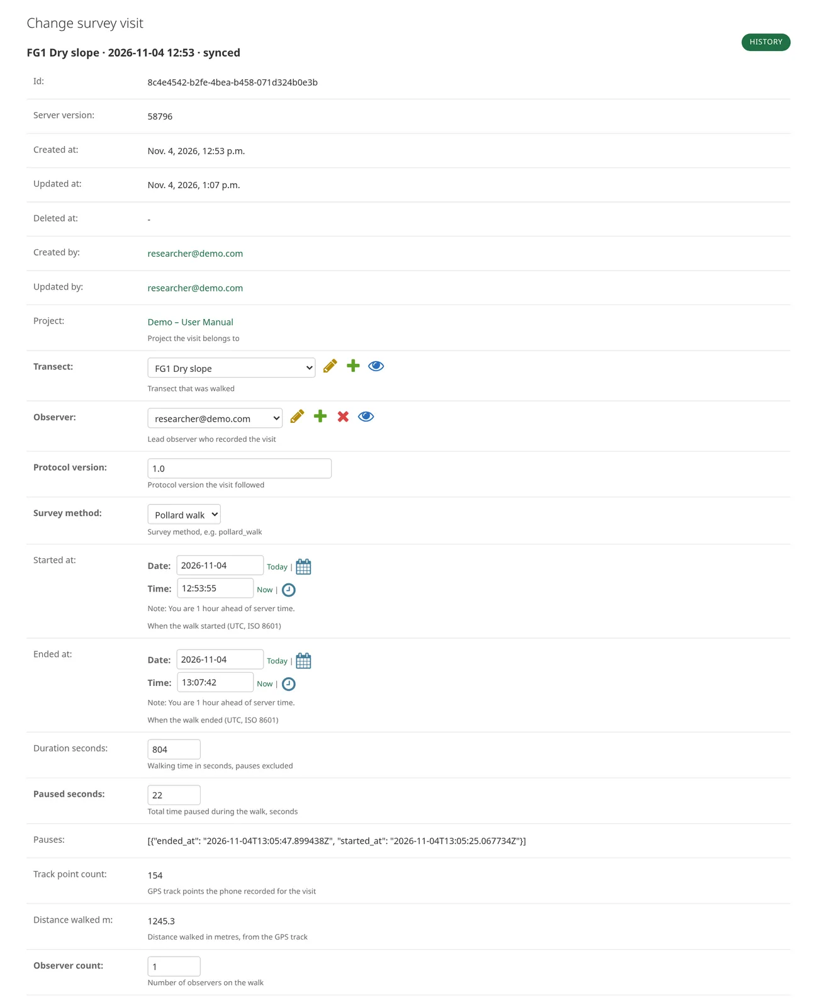

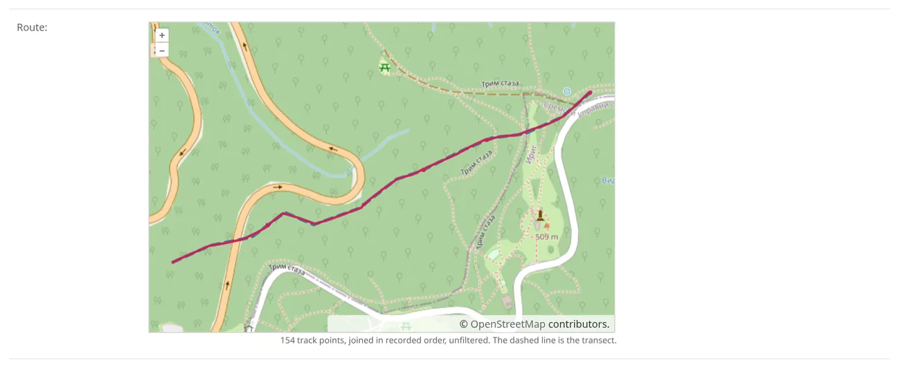

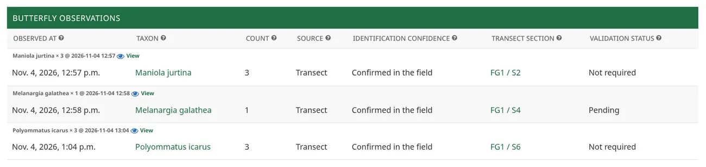

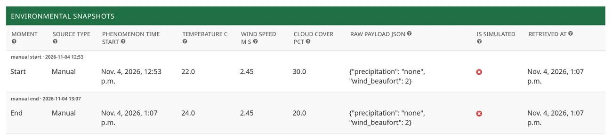
What to look for when you review:
- Route: does it follow the dashed transect from end to end? Route coverage pct and the caption under the map give the share covered, and parts of the transect the route missed are drawn in orange. Below the protocol's minimum (80 % by default) the visit is not valid.
- Weather: is it believable, and within the limits? Weather suitable shows the result of the check, and Weather missing reason holds any reason.
- True zero: a visit with Zero observation confirmed should have a route covering the transect. The example below is such a visit.
- Time: are the date and duration sensible? Remember that times are in UTC.
- Records: do the number and species seem plausible? Are unusual records in the validation queue?
- Flags: the Quality flags field and the list's Flags column point at problems the server found. See below.

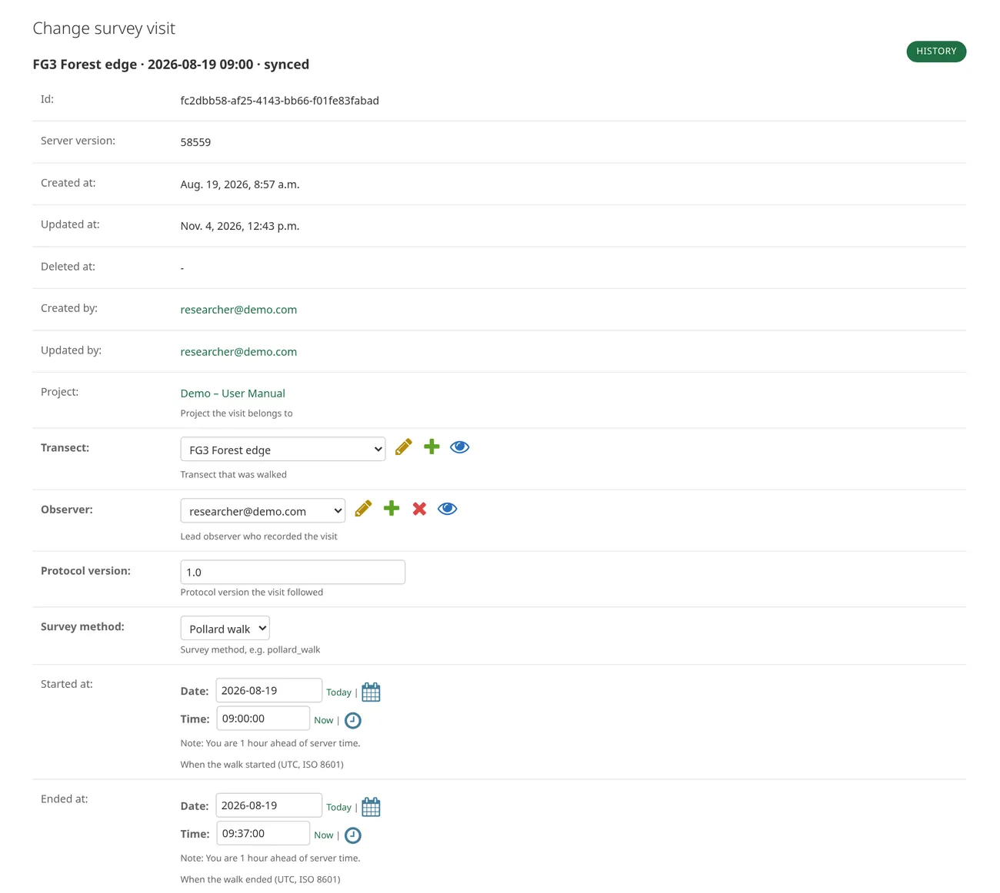
Quality flags and route coverage
The server checks every record and visit when it is saved, and marks possible problems with quality flags. A flag never refuses data and never changes it. It only points you at something worth a look.
| Flag | On | Set when |
|---|---|---|
Outside project area (outside_project_area) | Butterfly record | The record lies outside the project's study area. Not checked when the project has no area. |
Far from transect (far_from_transect) | Butterfly record from a walk | The record is farther from its transect than Max distance from transect m. |
High count (high_count) | Butterfly record | The count is above High count threshold. |
gps_gap | Visit | The GPS route has a gap longer than Gps gap s, not counting pauses. Set once the walk is finished. |
low_coverage | Visit | The route covers less of the transect than Min coverage pct. |
- Flagged butterfly records go to the validation queue, even when the observer was sure of the species. Confirm them there if all is well. The queue's By flag filter and Flags column show them.
- Visits: the By flag filter on the visit list finds flagged visits, and the Flags column shows them.
- Butterfly observations also have a By flag filter.

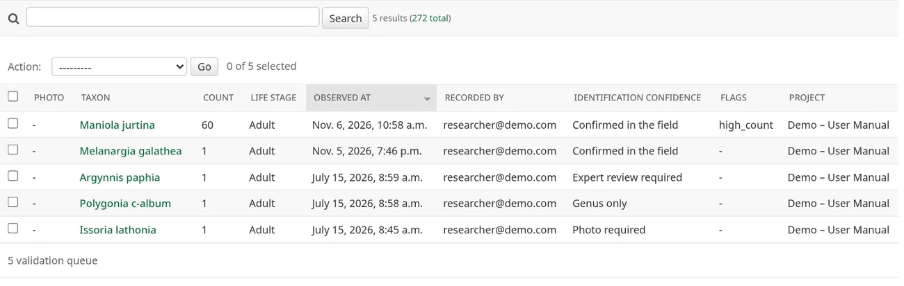
high_count flag, although the observer was sure of the species.Route coverage is worked out by the server with the same method the app uses at Finish, each time a visit or a batch of its route points arrives. It is the share of the transect that lies within Max distance from transect m of a usable GPS point. It is read-only and is a column of the visit export.
When is a visit valid? When it was finished (not cancelled), its weather was within the limits or Weather missing reason explains why not, and its route coverage reaches the minimum. The transect indicators count valid visits this way. To accept a visit with doubtful weather, write the justification in Weather missing reason.
Recompute flags
Flags and coverage are worked out when a record is saved. If you later change the protocol's limits, the study area or a transect's line, existing records keep their old flags. To work them out again, tick the visits or observations on their list and choose Recompute flags. Locked visits and their records are skipped: unlock them first. A flag can also disappear this way, and a record whose only reason to be in the queue was that flag then leaves it.
Correct a visit
Change a field and save, and give a reason in the dialog. Fields such as the status, project, distance and pauses cannot be edited here.
The rules from the app also apply here. You see a clear message if a change is refused:
- A finished visit needs its weather, or a reason it is missing.
- Zero observation confirmed cannot be ticked on a visit with butterfly records.
- The cancel reason must fit Started at: Not conducted means empty, and the others need a start time.
- This visit was changed after you opened it… means a phone or another admin saved it while you were editing. Reload the page and make your change again.
Mark as reviewed
Tick the visits on the list, choose Mark as reviewed and click Go. It works on Completed and Synced visits. Other visits are named in a Not changed message and the rest still change.
Lock and unlock
Locking makes a visit and all its records read-only, for you and for phones. Use it when the data is final.
- Tick the visits, choose Lock… and click Go.
- Write a Reason of at least 10 characters. It is stored in the visit's history.
- Confirm. The visit now opens read-only, with a red note saying who locked it and why.

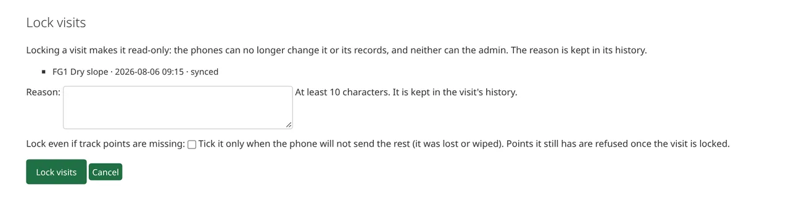

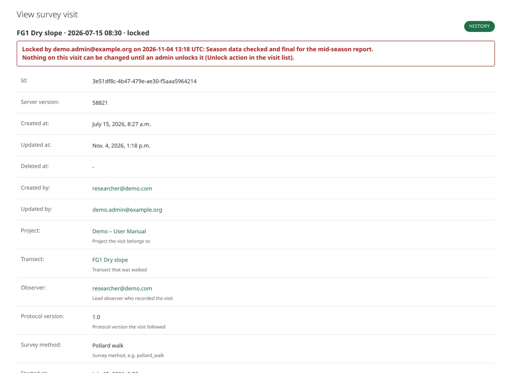
- Which visits: Completed, Synced or Reviewed. Drafts, visits in progress and cancelled visits cannot be locked.
- Missing route points: if a phone has recorded more points than the server has, locking is refused: The server has … of … track points; wait for the phone to sync… Ask the researcher to sync. Only if the phone is lost or wiped, tick Lock even if track points are missing.
- On the phone: after the next sync, the researcher sees a lock icon and cannot edit. A change they made offline in the meantime is refused and shows under Errors with a clear message.
To unlock, use Unlock… in the same way, also with a reason. The visit becomes Reviewed and can be changed again.
Records from the field
Butterfly observations
All butterfly records are under Butterfly observations. Records come from phones, so there is no Add button. You can search by species, by recorder's email and in the notes, and filter by project, validation status, source, confidence and flag.

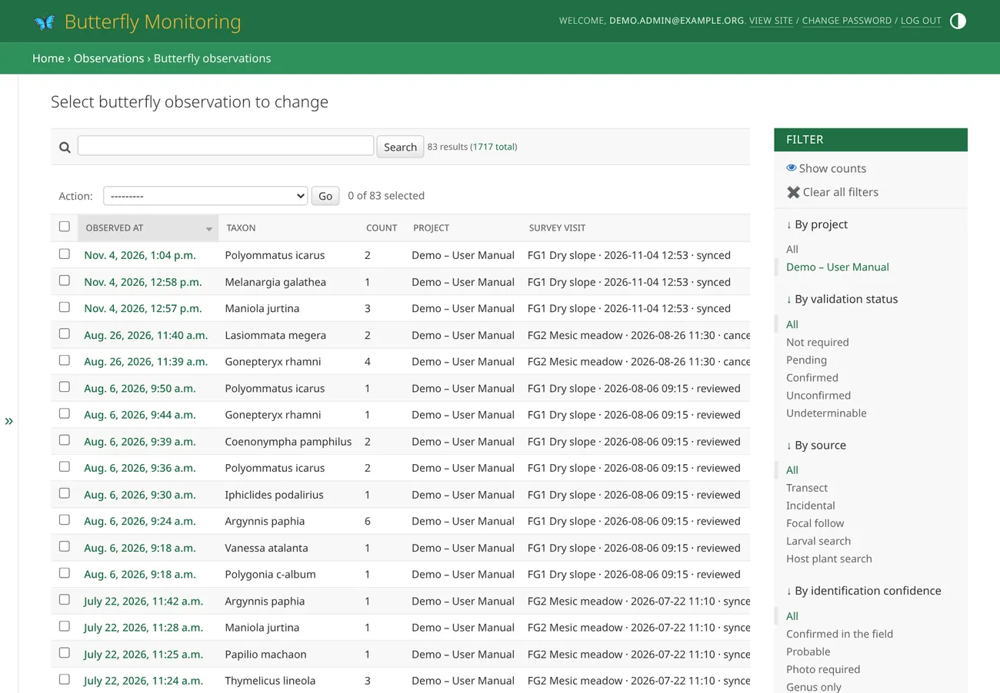

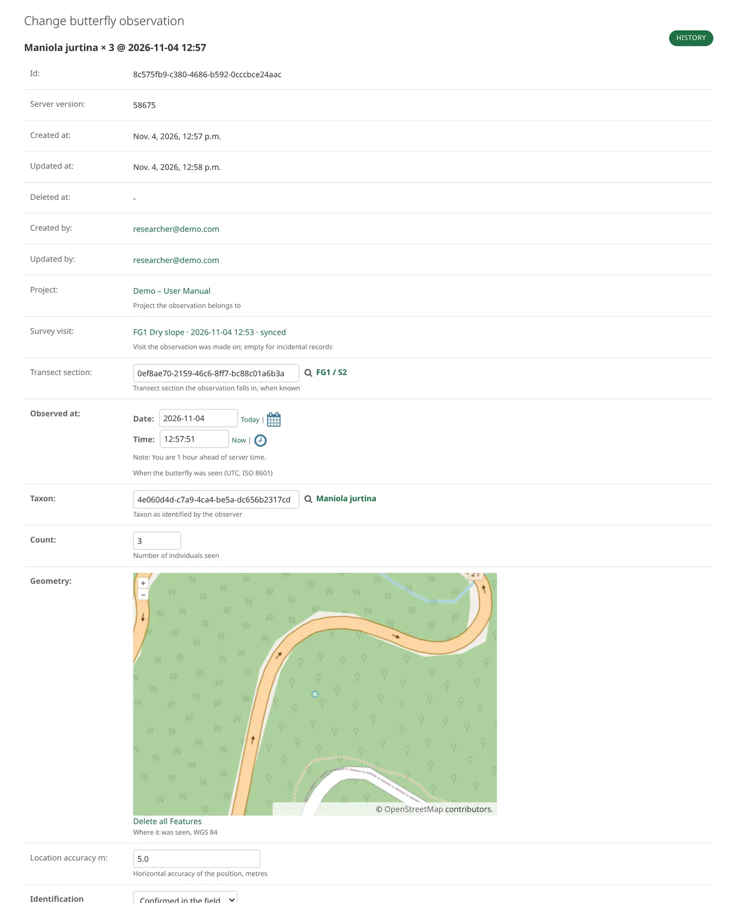
Correcting a record. For an unlocked visit you can change the species, count, section, position, details and notes. The same rules apply as on the phone. To check a species, use the validation queue instead: a validator's decision keeps the observer's original entry next to it, while an edit here overwrites it.
Actions on the list:
- Reassign sections: works out the section of each selected record again from its position. Use it after changing a transect's sections. The message reports how many changed.
- Send back to queue…: returns a decided record to the validation queue. See Send a record back.
- Recompute flags: works out the quality flags again. See Recompute flags.
- Export selected as CSV and Export selected as GeoJSON: download the ticked rows. See Exports.
- Soft delete selected and Restore selected (undo soft delete): remove a record that should not exist, such as a duplicate, and bring it back. The app has no delete for butterfly records, so researchers need you for this.
Plant records and habitat features
Under Resources, these two lists show what researchers recorded. You can view them on a map, but not change them. Soft deleting isn't available here either, so ask the researcher to change or delete their own record in the app. The only actions on these lists are the two export actions.


Photos
Photos lists all uploaded pictures. The list and pages are view-only. A thumbnail opens the original. Photos also appear on their record's page, where they are easier to work with. The Upload status filter finds photos still waiting. A photo with status Pending has been announced by a phone but has not arrived yet.

Validation
Validation means an expert checks a record that needs it. The original entry always stays. Your decision is stored next to it, and exports show both.
What goes in the queue
A record waits in Validation queue when its status is Pending. That happens when:
- the species is marked Photo required in the catalogue, or
- the observer chose the confidence Photo required, Genus only, Unknown or Expert review required, or
- an admin sent it back.
A record with a quality flag also waits in the queue, even when its status is Not required. Once decided, a record leaves the queue. Its status stays on the observation.

You can filter by project, family, confidence, flag and date. Search works on species names.
Decide a record
- Click the species name to open the record.
- Check the details, the map and the photos at full size. A click on a photo opens the original.
- At the bottom, write a comment if useful, then choose a decision.


| Button | Use it when | New status |
|---|---|---|
| Confirm | The species is right. | Confirmed |
| Change taxon | It is really another species. Choose it and write why. The comment is required. | Confirmed, with the validated species |
| Mark unconfirmed | The evidence does not support it. | Unconfirmed |
| Mark undeterminable | It cannot be identified from what is available. | Undeterminable |

Decide many at once
On the queue list, tick rows and use the actions Confirm, Mark unconfirmed, Mark undeterminable or Change taxon…. If a record is refused, for example because its visit is locked, it is named in a Not changed message and the others still change.
History of decisions
Every decision is kept for good. Open the observation (the queue page has a link, Open the observation) and scroll to Validation events.

To see the decisions of all records together, open Validation → Validation events. It is read-only. Filter by decision, project and date, search in the comments, and export the rows with the export actions.

Send a record back
To undo a decision, go to Butterfly observations, tick the record, choose Send back to queue…, write the required comment and confirm. The status returns to Pending, and the validated species and comment are cleared. The decision stays in the history.

- Researchers do not see validation in the app, so tell them if you want them to know a result.
- A locked visit's records cannot be validated. Unlock it first. So validate before you lock.
- A confirmed record can still change: if the observer later edits the species, the decision stays. Lock visits once validation is done to prevent this.
- Which species counts: the validated species if there is one, otherwise the observer's. Exports call this the effective species.
Sync conflicts
A conflict happens when a phone sends a change to a value that someone has also changed on the server since that phone last synced. Typically, you corrected a record while the researcher edited it offline. The system does not guess who is right. It keeps the server's value and asks you.
Resolve a conflict
- Open Sync conflicts. Filter By status to Open.
- Open the conflict. The Changes table lists every field, with the fields in conflict at the top and highlighted.
- Decide with the observer if you are unsure.
- Click Accept server or Accept client at the top right.
- Write the required Note saying why, and click Resolve.


| In the table | Meaning |
|---|---|
| Base | The value both sides started from. |
| Server | The value on the server when the phone's change arrived. |
| Client | The value the phone sent. A dash means the phone did not change this field. |
| Choice | What happens |
|---|---|
| Accept server | The server's version stays and the phone's change is dropped. The phone gets the server's version at its next sync. |
| Accept client | The phone's change is applied, but only the fields it changed. The usual rules apply, so this is refused if the visit is locked or a value is invalid. |
The researcher's Unsynced data screen shows the result and your note at their next sync. If the page warns that the record has changed since this conflict was recorded, open the record with Open the record and check the latest values before you decide.
Reports
The Reports group on the home page has three ready-made summary tables, always up to date. They are read-only. Filter them by project and year, sort by clicking a column heading, and download them with Export selected as CSV or … GeoJSON. Statistical modelling is left to R or Python.
Transect indicators
One row per transect and year: the standard figures of a Pollard walk scheme.

| Column | Meaning |
|---|---|
| Visits completed | Finished visits: completed, synced, reviewed or locked. |
| Valid visits | Finished visits that also meet the weather and coverage rules. See When is a visit valid? |
| True zero visits | Finished visits confirmed as having no butterflies. |
| Target visits | The protocol's Target visits per season, to compare with the two above. |
| Total hours, Total km | Walking time without pauses, and the length of the GPS routes. |
| Species count, Individuals, Observations | From the records of the walks. |
| Confirmed obs, To review obs | Records a validator confirmed, and records still waiting in the queue. |
| Individuals per km, Individuals per hour | Individuals divided by the km and hours above. Empty when there is no distance or time. |
Only records made during a walk count here. Free observations have no walk behind them, so they are left out of these figures.
Species phenology
One row per species and week: how many individuals and records, and the first and last day with a record. Use it to see when each species flies. Weeks are ISO weeks (Monday to Sunday). Free observations count here.

Behaviour counts
One row per project, year and behaviour: how many records note that behaviour. A record with two behaviours counts in both rows. The extra row reproductive counts records with courtship, mating or egg-laying, or of an egg, larva or pupa.

Exports
Exports give you the data as files for R, Python, QGIS or a spreadsheet. Only admins can export. The simplest way is the web admin. For date filters and other options, use the API, as described further down.
From the web admin
Selected rows of a list. The lists of visits, butterfly observations, plant records, habitat features, transects, validation events and the reports have two actions: Export selected as CSV and Export selected as GeoJSON. Filter the list, tick the rows (or tick the box in the heading and then Select all), choose the action and click Go. The file downloads straight away.

A whole project. Open the project. At the top right are Export project bundle (ZIP), a ZIP of CSV files with everything, and Export project GeoPackage, one file for QGIS. Both cover the whole project, without the GPS points.

- The files are the same as those of the API with no options: the same columns,
NAfor a missing value, all dates. Soft-deleted rows are left out. - Transect sections have no export action. They are in the project bundle and the GeoPackage.
GeoPackage for QGIS
A GeoPackage is one file that holds several map layers and tables. Open it in QGIS with Layer → Add Layer → Add Vector Layer, or drag it onto the map, and choose the layers.
| Layer | Contents |
|---|---|
transects, transect_sections | Lines |
butterfly_observations | Points |
plant_resources_points, plant_resources_polygons | Plant records, split by shape |
habitat_features_points, _lines, _polygons | Habitat features, split by shape |
survey_visits, environmental_snapshots, validation_history | Tables without a map shape |
Coordinates are WGS 84 (EPSG:4326). Missing values are real empty values, not NA. A layer with no rows is still there, with its columns. The GeoPackage has no GPS points and no metadata.json; use the ZIP for those.
What you can export
The rest of this chapter uses the API, with a tool such as curl or the API's documentation page. It lets you choose dates, the missing-value code and more.
| Dataset name | Contents | In the bundle? |
|---|---|---|
survey_visits | One row per visit: times, effort, route coverage, weather, status, outcome | Yes |
butterfly_observations | One row per record, with the recorded and the effective species | Yes |
plant_resources | Plant records | Yes |
habitat_features | Habitat features | Yes |
transects | Transects | Yes |
transect_sections | Sections with habitat and management | Yes |
environmental_snapshots | Weather at the start and end of visits | Yes |
validation_history | Every validation decision | Yes |
track_points | Every GPS point. This can be very large | Only when asked for |
Step 1: find the project's ID
Open the project in the web admin. The ID is the long code in the page's address: /admin/projects/project/4a9089c9-2cd1-48c6-8b7a-1ccd297d53ca/change/.
Step 2: download with curl
First log in to get a temporary access key. It is valid for 15 minutes. Replace the email and password with yours:
curl -X POST http://localhost:8080/api/v1/auth/login \
-H "Content-Type: application/json" \
-d '{"email":"you@example.org","password":"your-password"}'The answer contains "access":"…". Copy the long value and use it below in place of ACCESS_KEY.
Everything for one project, as a ZIP of CSV files:
curl -H "Authorization: Bearer ACCESS_KEY" \
"http://localhost:8080/api/v1/exports/bundle?project=PROJECT_ID" \
-o project.zipThe same as a GeoPackage: add &format=gpkg and save it as project.gpkg.
One dataset, as one file:
curl -H "Authorization: Bearer ACCESS_KEY" \
"http://localhost:8080/api/v1/exports/butterfly_observations?project=PROJECT_ID&format=geojson&from=2026-06-01&to=2026-07-31" \
-o observations.geojsonOptions
Add these to the address after a ?, joined with &.
| Option | Meaning | Example |
|---|---|---|
project | Only this project. Required for the bundle. | project=4a90… |
format | For single datasets: csv (the default), geojson or json. For the bundle: the ZIP of CSV files by default, or gpkg for a GeoPackage, which takes from and to but ignores na, excel and track_points. | format=geojson |
from, to | First and last day to include, in UTC. Both days count. Transects and sections ignore them. | from=2026-06-01 |
na | What to write for a missing value in CSV. The default is NA, which suits R. It may be empty. | na= |
excel | Adds a marker so that Excel reads Serbian letters correctly. | excel=1 |
track_points | Adds the GPS points to the bundle. | track_points=1 |
Without curl: the API page
If you prefer a browser, open /api/v1/docs/.
- Open auth → POST /api/v1/auth/login, click Try it out, enter your email and password, and click Execute. Copy the
accessvalue from the answer. - Click Authorize at the top, paste the value, and confirm.
- Open exports, choose the dataset or bundle, click Try it out, fill in the options, and click Execute. A Download file link appears.

Reading the files
- The bundle includes
metadata.json, which describes every column, the filters used, who exported it and when. - Coordinates are WGS 84 (EPSG:4326), longitude and latitude.
- Times are UTC.
taxon_scientific_nameis what the observer entered.effective_taxon_scientific_nameis the validated species if there is one, otherwise the observer's. Use the effective one for analysis.- Lists such as behaviours are joined with
;in CSV.
OGC API: QGIS, R and Python
The system also publishes data live through OGC API – Features, an open standard that GIS tools understand. It always shows the current data, and it is read-only. Only admins can reach it.
| Collection | Contents |
|---|---|
transects | Transect routes, one line per transect |
transect-sections | Sections with habitat and management |
butterfly-observations | Butterfly records, with the recorded and the validated species |
plant-resources | Plants as points or patches |
habitat-features | Habitat features as points, lines or polygons |
Look at it in a browser
Open /ogc/, for example http://localhost:8080/ogc/. The browser asks for a login, so enter your admin email and password.


Create a token
Tools such as QGIS need a key. A personal token works for this, and only for this: it opens the OGC API and nothing else.
- In the web admin, click Add next to Auth Token → Tokens.
- Pick your user and save. Each user has one token.
- Copy the key from the list.

Connect QGIS
- In Settings → Options → Authentication, click +, choose the type API Header, and add one header: name
Authorization, valueToken YOUR_KEY. - Choose Layer → Add Layer → Add WFS / OGC API – Features Layer, then New.
- Enter the URL
http://localhost:8080/ogcand choose the authentication you just made. - Connect, pick a collection and add it.
If your QGIS has no API Header type, use Basic with your admin email and password.
Filter the data
You can add filters to the address, in the browser or a script:
| Filter | Example |
|---|---|
| By project | ?project_id=PROJECT_ID |
| By species | ?effective_scientific_name=Maniola jurtina |
| By time (observations, plants, habitat) | ?datetime=2026-06-01/2026-07-31 |
| By area | ?bbox=19.82,45.15,19.86,45.17 (west, south, east, north) |
| Number of results | ?limit=100&offset=100 |
| Format | ?f=json or ?f=csv |
Any column of a collection can be used as a filter in the same way. Combine filters with &.
Python and R
import requests
r = requests.get(
"http://localhost:8080/ogc/collections/butterfly-observations/items",
params={"f": "json", "limit": 100, "project_id": "PROJECT_ID"},
headers={"Authorization": "Token YOUR_KEY"},
timeout=30,
)
r.raise_for_status()
features = r.json()["features"]For R with sf or httr2, and for GDAL, see docs/setup/ogc-access.md in the project's files.
Limits
- After revoking a token, or removing someone from the admin group, access can continue for up to 60 seconds.
- Five failed password logins in 15 minutes block that email here too, separately from the app.
- For now, the service's own links point to
http://localhost:8080, so it is simplest to use it on the server machine itself. To browse from elsewhere, seedocs/setup/ogc-access.md.
Running the server
You only need this chapter if you look after the server itself. Commands assume a terminal in the project's main folder. More detail is in the docs/setup folder of the project and in its README.md.
What runs
| Service | Job |
|---|---|
nginx | The front door on port 8080. It sends each request to the right service, and serves this manual at /manual/. |
django | The application: web admin, API, sync. |
db | The PostgreSQL database with PostGIS. |
minio | Stores the photos. |
pygeoapi | The OGC API. |
Start and stop
On the development setup, the full command is long because it names the two configuration files. For the very first start on an empty database, follow README.md instead, because the database must be prepared first.
# Start, or restart after changes
docker compose --project-directory . -f infrastructure/compose.yaml -f infrastructure/compose.dev.yaml up -d --build
# See whether everything runs. All five should say "healthy"
docker compose --project-directory . -f infrastructure/compose.yaml -f infrastructure/compose.dev.yaml ps
# Read the application's log
docker compose --project-directory . -f infrastructure/compose.yaml -f infrastructure/compose.dev.yaml logs -f django
# Stop. Your data is kept
docker compose --project-directory . -f infrastructure/compose.yaml -f infrastructure/compose.dev.yaml down-v to the down command. down -v deletes the database and all photos.Quick health check: open http://localhost:8080/api/v1/health/. It should answer {"status":"ok","db":true,"storage":true}. If storage is false, see docs/setup/minio.md.
Back up and restore
There is no automatic schedule. Back up before demos and after field sessions.
scripts/backup.sh /path/to/backup-disk/butterfly-backupsThis creates a dated folder with the database, all photos and a small description file. The newest 7 backups in that folder are kept, and older ones in the same folder are deleted. Keep the folder on a separate disk. The backup can also be encrypted, as described in docs/setup/backup.md.
scripts/restore.sh /path/to/backup-disk/butterfly-backups/butterfly-<time>restore first. Changes made after the backup are lost from the server, unless phones still hold them and sync them again.Connecting phones and computers
Phones reach the server through its address, set in the app's Settings → URL. Today there are two ways. The app has a button for each that fills in the address:
| Way | How | Good for |
|---|---|---|
| Tailscale | A private network across the internet. The laptop and the phone both join it. See docs/setup/tailscale.md. | Real use, from anywhere with a connection |
| USB | Plug the phone in, turn on USB debugging, and run adb reverse tcp:8080 tcp:8080. The app then uses http://localhost:8080. | Demonstrations with no network |
The web admin and OGC API can be opened at the same addresses. Port 8080 is the only one meant for general use.
Build the app
Until the download page exists, you build the APK yourself and send it to researchers. On a machine with Flutter, from the mobile folder:
flutter build apk --debugThe file is mobile/build/app/outputs/flutter-apk/app-debug.apk.
adb install -r app-debug.apk or by opening the new APK on the phone.Example data
For a new development setup, four commands fill the database with a butterfly list, plants, habitat types and a demo project. See docs/setup/seed-data.md. They are for development and demonstrations, not for real projects.
Getting a new researcher started
- Create the account with the group researcher.
- Add them to the project.
- Send them the link to the app. For now, this means sending the APK file and the server address.
- Send them their email and password in a safe way, and a link to the researcher manual (
/manual/on your server). - Ask them to log in, download the project, and walk a short test visit.
- Check that their visit appears under Survey visits, with a route on the map.
- If it was only a test, soft delete it.
Problems and answers
A researcher logged in but sees no projects.
Add them to the project under Project memberships, and check that their account has the researcher group. Then they pull down the list in the app.
A researcher cannot log in.
Check that Active is ticked. After five failed tries the account is blocked for 15 minutes. If they forgot the password, reset it. Also check that the server is running.
A new transect or changed protocol does not appear on a phone.
Phones get changes at their next sync. Ask the researcher to open the app with a connection, or pull down the project list. Also check that the transect has Active ticked and belongs to the right project.
A visit has no route on the map.
The phone may not have sent the points yet, because they come in batches. The caption under the map says how many it has. Ask the researcher to sync. If it stays empty, GPS may not have recorded. Check location permission and battery settings with them.
A visit stays "In progress" for days.
Either the researcher never tapped Finish, or their phone has not synced since. Ask them. They can finish or cancel it on the phone.
I cannot lock a visit: track points are missing.
Ask the researcher to sync. If the phone is lost, tick Lock even if track points are missing.
"Not changed: …" after an action.
That record was refused and the message says why. The other selected records were changed.
A section is refused when I save.
The section must lie within 5 m of the transect line along its whole length. Redraw it, or use Generate N equal sections.
A researcher recorded something by mistake.
They can correct butterfly records themselves until the visit is locked. To remove one, soft delete it. They can delete their own plant and habitat records in the app.
A researcher wants to add a forgotten butterfly to a finished visit.
The researcher can do it in the app: on their own finished visit, Add observation in the visit detail lets them pick a time inside the visit and place the point on the map. It stays a transect observation on that visit, and its created_at is after the visit's end, so the app marks it added after the visit. If the visit was finished as a true zero, the app clears the true-zero confirmation in the same step.
It does not work on a locked visit. Unlock it first if the researcher must add something. The web admin has no Add for butterfly observations yet. It is planned, so for now ask the researcher to add it, or note it in the visit's notes.
The times look wrong.
The web admin and exports use UTC, and the phone uses local time. See Times are in UTC.
The OGC API asks for a login over and over, or answers 403.
Only active users in the admin group can use it. Check the token or password. Researchers get 403.
Photos do not open, or the health check says "storage": false.
The photo storage is not reachable. Check that minio is healthy, and see docs/setup/minio.md.
A record is in the validation queue although the observer was sure of it.
It has a quality flag, for example a high count or a position outside the study area. Look at the Flags column, check the record, and confirm it if all is well.
The coverage or flags of old visits look wrong after I changed the protocol or a transect.
They are worked out when a record is saved. Tick the visits and use Recompute flags.
I created a transect from a proposal, but researchers cannot walk it.
A transect made from a proposal starts inactive. Cut its sections, tick Active and save. Phones get it at their next sync.
The basemap upload is refused.
The message says why. The file must end in .mbtiles, hold PNG, JPG or WebP tiles with a name and format in its metadata, and be at most 200 MB. See docs/setup/basemap.md.
A researcher's change was refused because the project is closed.
The phone made the change after you closed the project. If it should count, reopen the project and ask them to tap Retry under Errors on the Unsynced data screen. Otherwise they can discard it.
A researcher's phone is lost or broken.
Whatever it synced is safe. Anything it never synced is gone. Set them up on a new phone, and consider changing their password.
Coming later
These features are planned. Plans can change as the project develops.
| Feature | What it will do |
|---|---|
| Edit plant records | Add and correct plant records on a map in the web admin. |
| Shared plants and habitat | Project members see each other's plant and habitat records. |
| Public server and download page | A permanent server address and a website to download the app. |
| Second phase | Microclimate stations through the OGC SensorThings API, weather through OGC API – EDR, and butterfly movement tracks through OGC API – Moving Features. |
Example data only. Map data © OpenStreetMap contributors. Photo credits are on the start page.